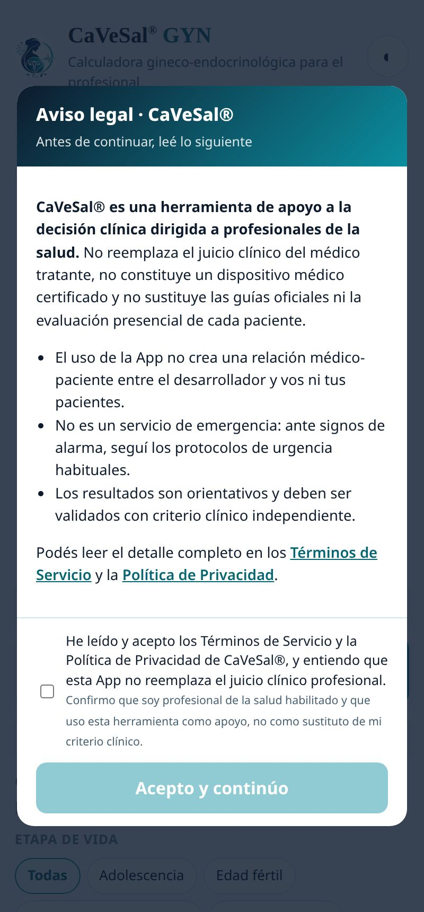
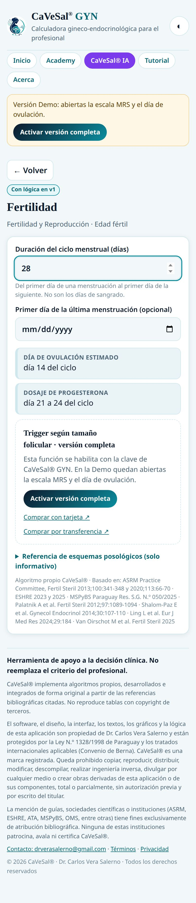
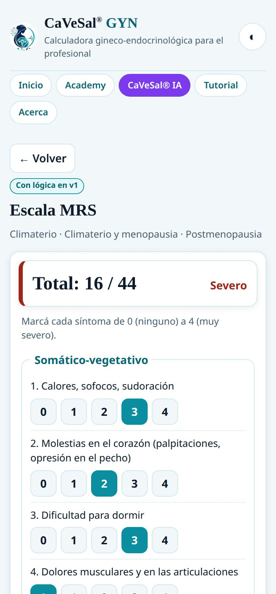
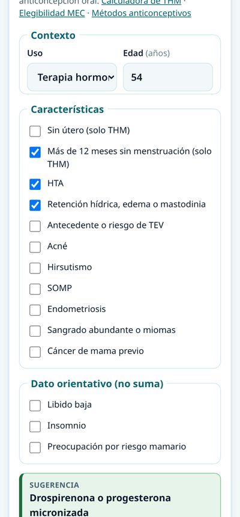
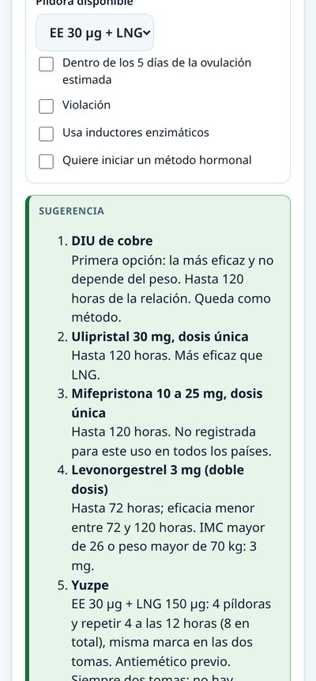

Antes de começar
O que é o CaVeSal® GYN e para quem é
O que é
O CaVeSal® GYN é uma calculadora gineco-endocrinológica para profissionais de saúde. Reúne funções de fertilidade, investigação pré-concepcional, climatério, adolescência, contracepção, saúde ginecológica e endocrinologia.
A interface do app está em espanhol; os nomes de botões e campos aparecem como no app, com a tradução entre parênteses.
Cada função calcula seu próprio resultado no mesmo bloco onde você insere os dados. Não há uma aba de resultados separada: o que você muda é recalculado na hora.
Ao abrir o app pela primeira vez aparece o aviso legal. Marque a caixa e toque em Aceptar (Aceitar) para continuar.

Demo e versão completa
Demo Aberta para testar: a escala MRS, o dia da ovulação com a janela da dosagem de progesterona, a Calculadora de TRH com o algoritmo SEGIRP 2026, o POP-Q do prolapso e o IMC. Novo O IMC mostra também o peso ideal: a faixa de peso para um IMC entre 20 e 25 conforme a altura, e quantos quilos perder ou ganhar para chegar.
Versão completa Soma o momento do trigger segundo o esquema de indução, o painel hormonal pré-concepcional e todas as funções que forem adicionadas, sem custo extra.
Na Demo, aparece em cima um aviso amarelo com o botão Activar versión completa (Ativar versão completa). As funções fechadas mostram a etiqueta Versión completa (Versão completa) e, ao abri-las, um cadeado com os links de compra.


Instalar e ativar
Abra cavesal.app/cavesal-gyn/ no navegador do celular ou do computador.
Instale como app com o botão Instalar app no canto inferior direito. No Android e no computador (Chrome ou Edge) abre a instalação direta. No iPhone ou iPad, pelo Safari, mostra os passos: botão Compartilhar, Adicionar à Tela de Início e Adicionar. Fica com o ícone do CaVeSal® GYN e abre sem conexão.
Abra pelo ícone instalado, toque em Activar versión completa (Ativar versão completa) e cole a chave que chegou por e-mail (começa com GYN-). A versão completa fica habilitada de forma permanente.
A chave habilita um dispositivo. Se você trocou de aparelho ou apagou os dados do navegador, use o link para reativá-la.

Como o app está organizado
Busca, abas, ficha e botões
Busca, motivo de consulta, etapa da vida e capítulo
Em cima está a Ficha da paciente. Abaixo, a busca: escreva um sintoma, um quadro ou um exame (sangramento, dor, mioma, ectópica, mamografia) e aparecem todos os módulos relacionados.
As três abas ordenam os mesmos módulos de três formas: Motivo de consulta (Tumor, Dor, Sangramento e Corrimento em destaque, e os demais motivos), Etapa de vida (Etapa da vida: adolescência, idade fértil, climatério e menopausa, pós-menopausa) e Capítulo (ginecologia geral, endocrinologia, fertilidade, contracepção, infecções, assoalho pélvico, climatério, oncologia, exames e imagens). Um módulo aparece em todos os lugares a que pertence. O número de cada botão indica quantos módulos ele tem.
Todas as funções calculam. Na Demo, as que não estão abertas mostram um cadeado e o botão Ver ejemplo (Ver exemplo), que abre um caso fictício somente leitura.
Botões de cima
- Inicio (Início): volta para a tela principal.
- Academy: abre o CaVeSal® Academy com as diretrizes completas. Incluído com a versão completa.
- Analizar con CaVeSal® IA (Analisar com CaVeSal® IA, botão violeta de cima), na Demo e na versão completa: dentro de uma tela envia essa tela para a CaVeSal® IA; no início abre a IA sem dados. A IA profissional é adquirida à parte: se você ainda não tem conta, ao chegar ela mostra como ativá-la.
- Robozinha da CaVeSal® IA: abaixo das abas, com sua mensagem e o botão Analizar (Analisar). Envia a tela aberta; no início pede que você escolha uma tela. Também funciona na Demo.
- Analizar con CaVeSal® IA no pé de cada tela, na Demo e na versão completa: envia os dados inseridos, o resultado e a conduta dessa tela, mais os antecedentes da ficha aberta. Também funciona com um exemplo carregado (chega marcado como paciente fictícia). Nome e documento não são enviados.
- Ao abrir, a CaVeSal® IA mostra «Enviado desde CaVeSal® GYN» (Enviado do CaVeSal® GYN) e analisa o caso sozinha: resumo, interpretação do resultado, conduta sugerida e alertas. Depois você pode continuar perguntando. Cada chegada usa uma consulta de análise da sua cota diária. Requer uma conta da CaVeSal® IA.
- Simulador: casos clínicos fictícios para treinar, livre na Demo.
- Tutorial: este manual.
- Acerca (Sobre): autoria, ecossistema, bases clínicas e aviso legal.
- O botão redondo do canto alterna entre tema claro e escuro.
Funções que já calculam
Cada bloco mostra seu resultado e suas fontes
Fertilidade: ovulação, progesterona e trigger
Algoritmo próprio CaVeSal® · Baseado em: ASRM 2013 e 2020, ESHRE 2023 e 2025, MSPyBS 2025
Insira a duração do ciclo em dias: do primeiro dia de uma menstruação ao primeiro dia da seguinte.
Se você inserir a data da última menstruação, o app mostra também a data da ovulação e a da dosagem de progesterona.
Versão completa Escolha o esquema de indução (clomifeno, letrozol ou gonadotrofinas) e o diâmetro do folículo dominante em milímetros.
O app indica se o folículo está na faixa para o trigger, abaixo ou acima do tamanho recomendado.
Faixas do folículo dominante
- Clomifeno: 20 a 28 mm, com melhores taxas entre 23 e 28 mm.
- Letrozol: 19 a 23 mm, tolerado até 28 mm.
- Gonadotrofinas: 16 a 18 mm, tolerado até 20 mm.


Pré-concepcional: semáforo, ácido fólico e painel hormonal Versão completa
Tabela adaptada do MSPBS 2022, p. 23 · OMS · ACOG/SMFM 2022 · USPSTF 2023 · CDC · Algoritmo próprio CaVeSal® · Baseado em: ASRM 2020 · ATA 2017
Semáforo: insira idade, peso, altura, hemoglobina, palidez, sífilis e HIV, e marque os critérios vermelhos e amarelos que ela tiver. Vence a cor mais alta. Se faltar um dado obrigatório, não se classifica como verde. Cada cor mostra a conduta do MSPBS, e as ambiguidades do quadro (35 anos, Hb entre 11 e 12, IMC de 30) aparecem explicadas.
Ácido fólico: dose segundo a cor e as indicações de dose alta (defeito do tubo neural prévio, diabetes, epilepsia, IMC de 30 ou mais), com o momento de início e fim. Se você marcar variante de MTHFR, mostra que não muda a dose nem o tipo.
Painel hormonal: todos os valores são opcionais. FSH, LH, AMH, TSH e prolactina são dosados do dia 2 ao 5 do ciclo; a progesterona, no dia 21. O TSH é interpretado com o anti-TPO, a levotiroxina, a FIV/ICSI e o limite superior do laboratório (4,0 se não for informado).
Anti-Tg, autoimunidade e trombofilia: o anti-Tg soma informação de autoimunidade tireoidiana; a decisão de levotiroxina continua baseada no anti-TPO. Se você marcar lúpus, SAF obstétrica ou trombótica, anticorpos antifosfolípides, trombose prévia ou trombofilia, aparecem os alertas pré-concepcionais (ACR 2020, SMFM #64, ACOG PB 197) com link para a diretriz.

Investigação do casal infértil Versão completa
Algoritmo próprio CaVeSal® · Baseado em: OMS 2025 · OMS 2021 · ASRM 2026 · AUA/ASRM 2024 · ESHRE 2023 · ASRM 2020 e 2021 · RCPI 2023
Quando investigar: com a idade e os meses tentando, indica se cabe iniciar a investigação (12 meses, 6 com 35 anos ou mais, imediata com 40 ou mais ou com causa conhecida). Os dois membros são investigados ao mesmo tempo.
Fator masculino: insira o espermograma; ele é comparado com os limites da OMS 2021 e o achado é nomeado (oligo, asteno, terato, azoospermia). Se anormal, repete-se após 11 semanas ou mais e encaminha-se à urologia. O REM após capacitação orienta IIU, FIV ou ICSI com a escala da diretriz do Prontuário (Sugerencia CaVeSal®).
Fator ovulatório, reserva e útero-tubas: ciclos, progesterona lútea, FSH, prolactina, TSH e sinais de SOP orientam a causa da anovulação. CFA e AMH classificam a reserva (não são teste de fertilidade). Escolha o exame tubário (HSG, HyCoSy/HyFoSy, laparoscopia) e seu resultado.
Próximo passo: resume a conduta prioritária do casal, os exames que faltam e se convém IIU ou FIV segundo o prognóstico.
↑ Voltar ao conteúdoSOP (SOMP): critérios, fenótipo e HOMA-IR Versão completa
Algoritmo próprio CaVeSal® · Baseado em: Diretriz internacional 2023 (Teede) · Lancet 2026 · Matthews 1985 · ADA
Critérios: a SOMP (sigla em espanhol da síndrome ovariana metabólica poliendócrina, antiga SOP) é confirmada com 2 de 3: disfunção ovulatória, hiperandrogenismo e ovário pelo ultrassom ou AMH. Em adolescentes com menos de 8 anos desde a menarca são necessários os dois primeiros; não se usam ultrassom nem AMH. Mostra o fenótipo A a D e lembra de excluir tireoide, prolactina e hiperplasia adrenal.
Metabolismo: IMC, HOMA-IR (apenas descritivo, sem ponto de corte universal), glicemia de jejum, TOTG e HbA1c com cortes ADA, e a conduta segundo a diretriz de 2023.
↑ Voltar ao conteúdoClimatério: escala MRS Demo
Baseado em: Heinemann 2004 (Menopause Rating Scale)
Marque cada um dos 11 sintomas de 0 (nenhum) a 4 (muito grave). O total, de 0 a 44, é atualizado em cima com seu grau de gravidade. Abaixo aparece a pontuação de cada subescala: somatovegetativa, psicológica e urogenital.

Climatério: Calculadora de TRH Demo Versão completa
Algoritmo próprio CaVeSal® · Baseado em: SEGIRP 2026 (Demo) · FIGO/WHF, EMAS, ACOG e ACP 2026 · NAMS 2022 · BGCS/BMS 2024 · EMA 2020-2022 · Endocrine Society 2019 · AACE 2020 · NOGG 2022 · BHOF 2022 (versão completa)
Escolha o modo, a etapa e o objetivo. No algoritmo combinado, além das contraindicações clássicas, marque os antecedentes oncológicos: cada um mostra se a TRH sistêmica não é recomendada, se é decidida com a oncologia ou se não a contraindica, segundo a histologia e o estádio. Em Outras condições, a doença coronariana contraindica a TRH, a doença da vesícula passa para via transdérmica e a endometriose sem útero passa para terapia combinada contínua.
Com Prevenção de osteoporose e risco de fratura alto ou muito alto, aparece o tratamento: TRH de primeira linha em menores de 60 anos ou com menos de 10 anos de menopausa e sintomas, bifosfonato com sua pausa, denosumabe (sem suspender sem passar para outro antirreabsortivo), raloxifeno, anabólico em risco muito alto e cálcio com vitamina D. O T-score e o risco da Densitometria são carregados sozinhos.
↑ Voltar ao conteúdoMama, colo e endométrio Versão completa
Algoritmo próprio CaVeSal® · Baseado em: ACR BI-RADS v2025 · USPSTF 2024 · ASCCP 2019-2025 · ACOG CO 734 · IETA
Três blocos independentes. BI-RADS: escolha a categoria e ele devolve a conduta (por exemplo, BI-RADS 0 em menor de 30 sugere ultrassom mamário; 4 e 5, biópsia). Colo do útero: sem resultados dá o esquema por idade; com citologia e HPV, a conduta. Endométrio: etapa, espessura e sangramento, com achados IETA opcionais.
↑ Voltar ao conteúdoMassa anexial: O-RADS, IOTA e GI-RADS Versão completa
Algoritmo próprio CaVeSal® · Baseado em: ACR O-RADS US v2022 · IOTA · GI-RADS · ACOG PB 174 · RCOG GTG 62
Insira primeiro os dados da paciente (idade, menopausa, CA-125). Cada sistema calcula seu resultado e, se for de risco, acrescenta marcadores tumorais, imagem complementar (RM com contraste ou TC) e encaminhamento.
↑ Voltar ao conteúdoÚtero: adenomiose MUSA e miomas FIGO Versão completa
Algoritmo próprio CaVeSal® · Baseado em: MUSA 2022 · FIGO PALM-COEIN · STEP-W · ACOG PB 228
MUSA: marque os sinais diretos e indiretos; um sinal direto confirma. Miomas: escolha o tipo FIGO; nos submucosos aparece a pontuação STEP-W para planejar a histeroscopia.
↑ Voltar ao conteúdoEndometriose: #Enzian, rASRM, EFI e conduta Versão completa
Algoritmo próprio CaVeSal® · Baseado em: ESHRE 2022 · IDEA 2016 · #Enzian 2021 · rASRM 1996 · EFI (Adamson 2010)
Marque os sintomas e os achados do ultrassom em 4 passos. Escolha o método do #Enzian (ultrassom, RM ou cirurgia) e preencha cada compartimento: ele monta o código final. Se houve cirurgia, complete o rASRM e o EFI (que toma a lesão e o total do rASRM). Em Conduta escolha o objetivo: dor, gravidez, ambos ou achado sem sintomas. O botão Copiar resumen (Copiar resumo) leva o código, o estádio e o EFI.
↑ Voltar ao conteúdoIncontinência urinária Versão completa
Algoritmo próprio CaVeSal® · Baseado em: NICE NG123 · AUA/SUFU 2023 e 2024 · Stamey 1980 · Sandvik 1993 e 2000
Marque os sintomas: define esforço, urgência ou mista. No esforço aparece o grau de Stamey; o índice de Sandvik mede a gravidade. O diário miccional de 3 dias calcula polaciúria, noctúria, poliúria e poliúria noturna. A conduta vai das medidas gerais ao assoalho pélvico, aos fármacos com doses e à cirurgia ou terceira linha. Os sinais de alarme indicam encaminhar.
↑ Voltar ao conteúdoOncologia: estadiamento FIGO Versão completa
Algoritmo próprio CaVeSal® · Baseado em: FIGO 2018 colo · FIGO 2023 endométrio · FIGO 2014 ovário · ESGO
Insira a extensão, o tamanho e os linfonodos. Devolve o estádio, os exames de extensão, o encaminhamento à ginecologia oncológica e a conduta geral, sem doses. No endométrio, o grupo molecular pode mudar o estádio I ou II.
↑ Voltar ao conteúdoPuberdade precoce Versão completa
Algoritmo próprio CaVeSal® · Baseado em: Diretrizes CaVeSal® · MSPyBS Paraguai (2025) · Carel 2009 · Latronico 2016 · Marshall e Tanner 1969 · Speiser 2018
Insira a idade, os estádios de Tanner (mama e pelos pubianos), a velocidade de crescimento, a idade óssea, o ultrassom pélvico (comprimento e volume uterino, relação corpo/colo, linha endometrial, volume ovariano e folículos) e o perfil hormonal (LH basal, pico de LH com GnRH, estradiol, 17-OHP basal e pós-ACTH, DHEA-S). Devolve o tipo provável (central, periférica adrenal ou ovariana, telarca isolada ou adrenarca idiopática), o laudo ultrassonográfico montado e a conduta: RM de crânio e bloqueio do eixo com agonistas de GnRH na central, ou hidrocortisona na hiperplasia adrenal não clássica.
↑ Voltar ao conteúdoDiabetes fora da gravidez Versão completa
Algoritmo próprio CaVeSal® · Baseado em: ADA, Standards of Care in Diabetes 2026 · OMS 2006 e 2011
Insira glicemia de jejum, TOTG de 2 horas, HbA1c ou glicemia casual com sintomas. Devolve normoglicemia, pré-diabetes, faixa de diabetes a confirmar ou diabetes, com a diferença entre ADA e OMS e a conduta (estilo de vida, metformina quando cabe, planejamento da gravidez). Não usa os cortes da gestante.
↑ Voltar ao conteúdoFicha da paciente Demo
Algoritmo próprio CaVeSal® · Baseado em: Diretrizes CaVeSal® · US MEC 2024 · NCCN 2025 · OMS (IMC)
Insira uma única vez a idade, peso e altura, os antecedentes gineco-obstétricos, o tabagismo (cigarros por dia e anos, com o índice maços-ano), os antecedentes pessoais com sua categoria MEC (hipertensão, diabetes, trombose, trombofilia, cardiopatia isquêmica, AVC, enxaqueca, epilepsia, lúpus, doença mamária) e os familiares (câncer de mama, ovário, cólon ou endométrio, BRCA, trombose, diabetes). Devolve o semáforo de fatores de risco e quais métodos contraceptivos ela pode usar (categoria 1 a 4 e se cabe só progestagênio). Os dados são pré-carregados nos módulos.
Na Demo você pode marcar e ver o semáforo. Salvar a paciente com seu código, abri-la depois, exportá-la e importá-la em JSON é da versão completa. Com a versão completa, ao sair de um módulo a consulta é salva na ficha e ao voltar aparece o botão Restaurar. Os dados ficam só neste dispositivo, sem nome nem documento.
↑ Voltar ao conteúdoSangramento uterino anormal: PALM-COEIN Versão completa
Algoritmo próprio CaVeSal® · Baseado em: Diretrizes CaVeSal® · FIGO 2018 · ACOG CO 557, PB 128, CO 785 e CO 734
Insira frequência, duração e variação do ciclo, volume, sangramento intermenstrual ou pós-coital, β-hCG, hemoglobina, a triagem de coagulopatia, os fatores para biópsia e a causa PALM-COEIN. Devolve o padrão FIGO, se cabe investigar coagulopatia ou biopsiar o endométrio, e a conduta por causa, incluindo o sangramento agudo abundante.
↑ Voltar ao conteúdoAmenorreia primária e secundária Versão completa
Algoritmo próprio CaVeSal® · Baseado em: Diretrizes CaVeSal® · ASRM 2008 · ESHRE POI 2016/2024 · Endocrine Society 2017
Segue o algoritmo: definição, β-hCG, TSH e prolactina, FSH, teste do progestagênio e de estrogênio-progestagênio; na primária, desenvolvimento mamário, útero e cariótipo. Devolve a causa provável (SOP, amenorreia hipotalâmica, IOP, hiperprolactinemia, Asherman, Turner, MRKH, insensibilidade androgênica, obstrução) e a conduta.
↑ Voltar ao conteúdoDoença inflamatória pélvica Versão completa
Algoritmo próprio CaVeSal® · Baseado em: Diretrizes CaVeSal® · CDC 2021
Insira os critérios mínimos, adicionais e específicos e os critérios de internação. Devolve o diagnóstico, se é ambulatorial ou de internação, o esquema antibiótico, o manejo do abscesso tubo-ovariano e do DIU, o parceiro e o controle em 72 horas.
↑ Voltar ao conteúdoDor pélvica aguda e crônica Versão completa
Algoritmo próprio CaVeSal® · Baseado em: Diretrizes CaVeSal® · ACOG PB 193, CO 783 e PB 218 · NICE NG126 · CDC 2021 · RCOG GTG 41 · Roma IV · AUA 2022
Aguda: estabilidade, β-hCG e ultrassom; se positivo, gravidez intrauterina, ectópica (metotrexato ou cirurgia) ou de localização desconhecida com β-hCG em 48 horas; se negativo, torção, DIP, abscesso, cisto roto, apendicite e causas urinárias. Crônica: 6 meses ou mais, sinais de alerta, causas prováveis (endometriose, adenomiose, congestão pélvica, aderências, bexiga dolorosa, cólon irritável, miofascial, neuropática, psicossocial), exames e conduta.
↑ Voltar ao conteúdoLaboratório por quadro Versão completa
Algoritmo próprio CaVeSal® · Baseado em: Diretrizes CaVeSal® · OMS 2024 · ADA · ATA 2017 · ASRM 2020/2026 · ESHRE (IOP 2024, RPL 2022) · SOP 2023 · Endocrine Society · NICE NG23 · ACOG PB 197 · ACR 2020 · CDC 2021
Escolha o quadro: rotina e pré-concepcional, sangramento, ciclo e fertilidade (dia 2 a 3, AMH, progesterona do dia 21), hiperandrogenismo e metabólico, climatério, puberdade, perfil imunológico (antifosfolípides, trombofilia hereditária, lúpus e abortos de repetição) ou secreção vaginal e endocervical. Mostra o que pedir, o que não pedir de rotina, a interpretação de cada resultado e a conduta.
↑ Voltar ao conteúdoUltrassom ginecológico: reserva, ovário policístico, tubas e cavidade Versão completa
Algoritmo próprio CaVeSal® · Baseado em: ESHRE Bologna 2011 · ASRM 2020 · SOP 2023 · ASRM 2021 · FOAM 2022 · AAGL · ASRM 2016
Escolha o que avaliar. Reserva: CFA e AMH com cortes de Bologna e de hiper-resposta. Ovário policístico: folículos por ovário (8 MHz) ou volume. Tubas: resultado de HSG ou HyFoSy por lado e cavidade, com conduta (FIV, salpingectomia por hidrossalpinge, histeroscopia). Histeroscopia: achado e conduta.
↑ Voltar ao conteúdoDensitometria óssea Versão completa
Algoritmo próprio CaVeSal® · Baseado em: OMS 1994 · ISCD 2023 · BHOF 2022 · AACE 2020 · Endocrine Society 2019/2020 · USPSTF 2025
Insira os T-scores (aceita negativos com vírgula) ou o Z-score na pré-menopausa, fraturas e FRAX. Devolve a classificação, se há indicação de tratamento, o risco muito alto e o controle.
Os valores são copiados do laudo: o app não lê o PDF nem a foto. Segundo a ISCD, o diagnóstico é definido pelo T-score mais baixo entre coluna, colo do fêmur e quadril total, e o app indica em qual região está. Com indicação de tratamento sugere alendronato, risedronato ou ácido zoledrônico (reduzem fraturas vertebrais, não vertebrais e de quadril); o ibandronato só demonstrou reduzir fraturas vertebrais, então com risco no quadril a conduta indica não usá-lo. Também classifica cada região separadamente, avisa se entre coluna e quadril há mais de 1 desvio de diferença (possível artrose ou calcificação que eleva a coluna) e, na pós-menopausa, com Z-score de −2,0 ou menos sugere procurar uma causa secundária.
↑ Voltar ao conteúdoIndução da ovulação Versão completa
Algoritmo próprio CaVeSal® · Baseado em: ASRM 2022 · ASRM 2020 · ASRM 2024 · SOP 2023 · limiares do módulo Fertilidade
Escolha o fármaco e escreva os folículos de cada ovário separados por vírgula (por exemplo 18, 14, 11). Devolve se aplicar a hCG, se cancelar por gravidez múltipla ou hiperestimulação, a data do próximo ultrassom, o endométrio e o controle 48 a 72 h depois da hCG.
↑ Voltar ao conteúdoSíndrome de hiperestimulação ovariana Versão completa
Algoritmo próprio CaVeSal® · Baseado em: RCOG GTG 5 · ASRM 2024
Marque fatores de risco, sintomas e laboratório. Devolve a gravidade, a conduta (ambulatorial ou internação) e os sinais de alarme.
↑ Voltar ao conteúdoContracepção: elegibilidade e métodos Sugestão na versão completa
Algoritmo próprio CaVeSal® · Baseado em: US MEC 2024 (com apêndices E, F, I e J) · OMS 2025 e 2026 · FSRH 2023 · bulas FDA de Mounjaro (08/2026) e Ozempic (05/2026) · OMS 2018 · Trussell 2011
Um único módulo em 3 passos. Em cima, o bloco de categorias 1 a 4 e o botão (i) Leyenda (Legenda) com as três leituras, I/C, A/C/D e A/C/D/S.
Passo 1: idade, método atual e início ou continuação. Passo 2: toque em cada condição ou sua variante; a busca as filtra e as marcadas ficam em cima, com × para retirá-las. Inclui barreira, naturais, emergência e incretinas. Passo 3: a Sugerencia CaVeSal® (Sugestão CaVeSal®) e os métodos por família (DIU, só progestagênio, combinados, lactação, barreira, emergência, esterilização e naturais), com filtros. Toque em um método para ver sua ficha: Pearl, duração, composição, por que tem essa categoria e, nos combinados, as formas de uso (sequencial, estendido fixo, flexível e contínuo).
↑ Voltar ao conteúdoCâncer hereditário: BRCA e síndrome de Lynch Versão completa
Algoritmo próprio CaVeSal® · Baseado em: NCCN · ACOG PB 182 e 147 · Amsterdam II · MSPBS 2025
Marque a história pessoal e familiar. Devolve os critérios cumpridos, o encaminhamento com painel multigênico e, se ela já tem a variante, o seguimento e a cirurgia redutora de risco.
↑ Voltar ao conteúdoMinhas pacientes e backup no Google Drive Versão completa
Aba Pacientes: lista de fichas salvas com busca, Abrir (carrega a ficha e suas consultas) e Borrar (Apagar). Backup local baixa um .json com todas as pacientes; Abrir Google Drive leva ao seu Drive para enviá-lo. Em outro aparelho, Elegir archivo .json (Escolher arquivo .json) o importa: Combinar soma as pacientes e mantém a versão mais recente de cada uma; Reemplazar todo (Substituir tudo) deixa só as do arquivo. Também aceita o .json de uma única paciente exportado da ficha.

Dados do Prontuário Clínico Versão completa
No Prontuário Clínico CaVeSal®, o botão Enviar a GYN (Enviar para o GYN) abre este app com os dados clínicos estruturados da paciente, sem nome nem documento. Cada módulo pré-carrega o que corresponde e mostra o aviso "Datos recibidos de la HC CaVeSal®" (Dados recebidos do Prontuário CaVeSal®), com o que falta completar à mão.
Recebem dados: escala MRS, elegibilidade MEC, métodos contraceptivos, escolha do progestagênio, contracepção de emergência, Calculadora de TRH, incretinas, semáforo pré-concepcional, IMC, incontinência (diário miccional), fertilidade, SOP, casal, endometriose, massa anexial, exames, densitometria, sangramento uterino anormal e a ficha da paciente.
A ficha só é pré-carregada se estiver vazia; dali recebe um código e é salva em Minhas pacientes. Tudo fica editável e o botão "Descartar datos de la HC" (Descartar dados do Prontuário) apaga o que foi recebido.
↑ Voltar ao conteúdoEscolha do progestagênio Versão completa
Algoritmo próprio CaVeSal® · Baseado em: BMS 2026 · EMA 2013 e 2014 · ESTHER/E3N · Schindler 2008 · Regidor 2018 · LIBERATE · LIFT
Escolha o uso (TRH ou contracepção oral) e marque as características. Sugere o progestagênio, o que evitar e o esquema cíclico ou contínuo. Libido, sono e risco mamário são dados orientativos e não mudam a sugestão. Inclui o perfil farmacológico por grupo, o risco de TEV e as doses em TRH com tibolona.

Contracepção de emergência Versão completa
Algoritmo próprio CaVeSal® · Baseado em: OMS 2021 · FIGO/ICEC · FSRH 2017 · Cochrane 2019
Insira as horas desde a relação, o IMC ou o peso e a situação. Ordena as opções por eficácia (DIU de cobre, ulipristal, mifepristona, levonorgestrel e Yuzpe), ajusta a dose de levonorgestrel e calcula as pílulas de Yuzpe segundo o contraceptivo disponível. Mostra o mecanismo de cada um.

Marcadores tumorais Versão completa
Algoritmo próprio CaVeSal® · Baseado em: Diretrizes CaVeSal® · ESMO 2018 · ESGO-ESMO-ESP 2024 · RCOG GTG 62 · ACOG PB 174 · Moore 2009
Insira CA-125, HE4 (calcula o ROMA), CEA, CA 19-9 e os marcadores germinativos e de cordões sexuais. Devolve a origem provável, os falsos positivos, o que pedir segundo a idade e quando encaminhar à ginecologia oncológica.
↑ Voltar ao conteúdoExemplos e Simulador
Para ver o que cada módulo faz e para treinar
Casos de exemplo
Cada módulo tem um ou mais casos de exemplo. Na versão completa, o botão Cargar ejemplo (Carregar exemplo) preenche os campos e mostra o resultado. Na Demo, os módulos fechados mostram o caso de exemplo com seu resultado completo em modo somente leitura, para ver o que a versão completa faz antes de comprá-la.
Simulador GYN
O botão Simulador abre casos clínicos fictícios por área (adolescência, contracepção, fertilidade, endocrinologia, infecções, assoalho pélvico, climatério e oncologia). Cada resposta mostra seu fundamento e o link para a bibliografia. Também é livre na Demo.
↑ Voltar ao conteúdoAcademy, IA e Sobre
O restante do ecossistema CaVeSal®
Academy e IA
O CaVeSal® Academy reúne as diretrizes clínicas completas de todos os apps, incluindo as de ginecologia, endocrinologia e fertilidade. Está incluído com a versão completa: ao tocar em Academy no app, ele abre com seu acesso.
A CaVeSal® IA é a inteligência artificial profissional. É adquirida à parte. Do GYN (Demo ou versão completa) você envia o caso de qualquer tela e ela o analisa sozinha ao abrir. Além disso, busca nas fichas do GYN e nas diretrizes relacionadas do Prontuário Clínico.
Sobre
Mostra o ecossistema de apps (este na versão completa e os demais em Demo), o QR para convidar suas pacientes para o CaVeSal® Mamá e o CaVeSal® Mujer, os tutoriais, a autoria clínica, as bases clínicas com sua bibliografia e o aviso legal.

Aviso legal e contato
O CaVeSal® GYN é uma ferramenta de apoio à decisão clínica dirigida exclusivamente a profissionais de saúde. Não diagnostica nem substitui o julgamento clínico. A menção a ASRM, ESHRE, ATA, OMS, FIGO e outras instituições tem fins de atribuição bibliográfica; nenhuma patrocina, endossa ou certifica o CaVeSal®.
O software, o design, os textos e a lógica estão protegidos pela Lei N.º 1328/1998 do Paraguai e pela Convenção de Berna.
Contato: drverasalerno@gmail.com
Atualizado: novembro de 2026 · © 2026 CaVeSal® · Dr. Carlos Vera Salerno